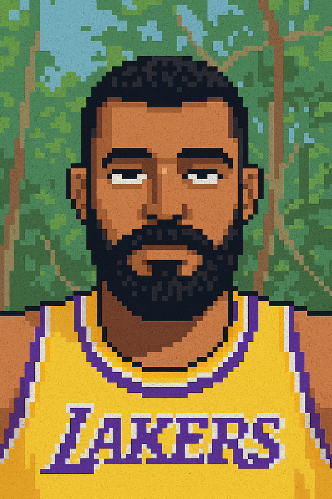

Pensei que não era pra mim e deixei de lado.
Em janeiro de 2025 esbarrei com uma propaganda da plataforma alura e descobri o front end. Desde o
momento
da minha inscrição tenho aprendido o máximo para ter a bagagem necessária para ser um bom
profissional.
→
Meu primeiro contato com a programação aconteceu durante a pandemia em 2020,
um
amigo me falou sobre python
e eu achei o ramo muito interessante. Aprendi lógica de programação, mas ao adentrar no backend eu
não
me
adaptei e não foi falta de tentativa.
←
Ao decorrer desses meses mergulhei um pouco em outras áreas adjacentes:
Desenvolver aplicativos com react
native e expo. Básico de backend (crud) com node.js e express.js.